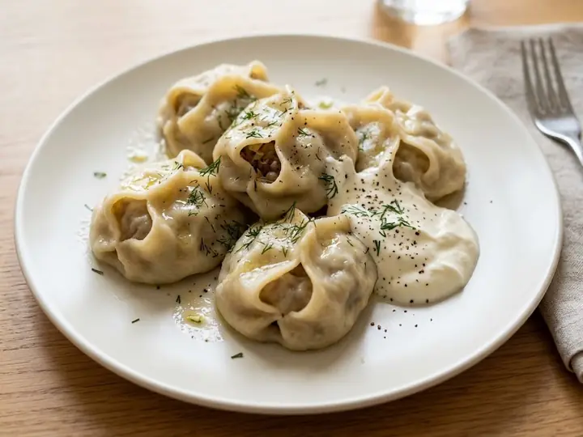

5 recipes · all written for one
Uzbek dinners for one
5 Uzbek dinners, each written for a single portion, with beef, chicken and lamb on the menu. Most take around 29 minutes from start to finish.

About the food
Plov, cumin, carrots and lamb from the Silk Road. Filling, one-pot cooking.
Worth having in the cupboard
- Ground cuminin 5 recipes
- Beef stockin 2 recipes
- Paprikain 2 recipes
Uzbek-Style Chicken & Chickpea Rice
Uzbek-Style Lamb Shashlik Skewers

Uzbek-Style Lagman Noodle Soup with Beef
Uzbek-Style Manti Dumplings with Soured Cream
Keep browsing
Other cuisines
ArgentinianArmenianAustralianAustrianBelgianBrazilianCanadianChileanChineseColombianCubanCypriotDanishEgyptianEthiopianFinnishFrenchGeorgianGermanGhanaianGreekHawaiianHungarianIndianIndonesianPersianIrishIsraeliItalianJamaicanJapaneseKenyanKoreanLebaneseMalaysianMexicanMoroccanDutchNew ZealandNigerianNorwegianPakistaniPeruvianFilipinoPolishPortuguesePuerto RicanRomanianRussianSenegaleseSingaporeanSouth AfricanSpanishSri LankanSwedishSwissThaiTrinidadianTunisianTurkishBritishAmericanUkrainianVietnamese